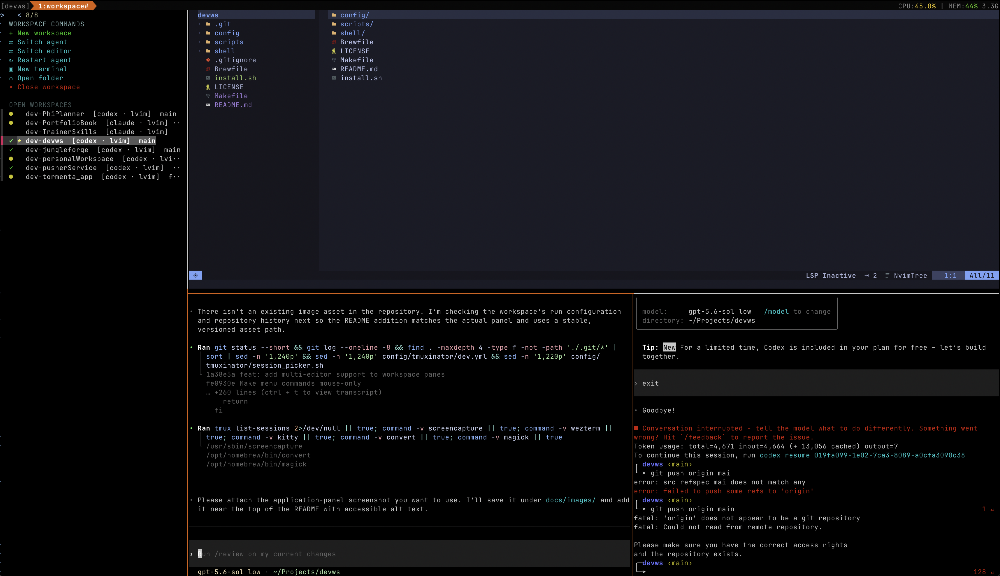

A complete, visual, and simple explanation of how the workspace manager and the autonomous multi-agent engineering team operate under the hood.
Think of devws as a two-layer system:
A smart terminal workspace tool built on top of tmux and Git worktrees. Every branch gets its own session containing an editor, a terminal, and an AI agent side-by-side that persists through reboots.
Turns your workspace into an autonomous software company. Instead of one AI doing everything, you get a Tech Lead, specialized coders, testers, and reviewers working safely in parallel.
| Role | Office Analogy | Real Responsibility in devws |
|---|---|---|
| You (The User) | Company Founder / VP | Defines high-level goals, approves the baseline plan (Gate 1), approves external spending/actions, and reviews final draft PRs (Gate 2). |
| The Leader | Tech Lead / CTO | Interviews you, sets up work contracts, assigns orders to workers, and reviews reports. Has NO terminal and NO file-editing rights! |
| Workers (Floor) | Software Engineers | Backend, frontend, or doc engineers (Claude, Codex, OpenCode). They receive 1 order at a time, code in an isolated sandbox, and run tests. |
| Code Reviewer | Senior QA / Peer Reviewer | An independent senior agent that inspects merge candidate diffs before code is permitted into the task branch. |
| Dispatcher | The Office Manager | A background loop ticking every 1 second. Carries queued messages, checks for stuck agents, and alerts the Leader. |
| The Runner | Cleanroom Laboratory | Rootless Docker containers with no network access where code runs and tests execute safely. |
How the components interconnect over local JSON-RPC (MCP), standard POSIX file locks, and tmux terminal injection:
Workers run non-interactive turns (--print, exec), but never start blank. Claude uses deterministic UUIDs with --resume; Codex captures thread_id and calls exec resume. Context is preserved across wake-ups.
Workers never touch your real repository. They execute in temporary source snapshots inside air-gapped rootless Docker containers with --network none and memory caps (4 GB).
Every read/write to state.json is protected by an exclusive file lock (state.lock). If a turn fails, it rolls back completely. Updates use atomic file renames—zero corruption.
Work is siloed into Git Lanes (worktrees). Features cannot modify protected tests. Changes must pass full repo merge candidate checks and independent peer review before merging.
How devws guarantees that untrusted, autonomous LLM code execution cannot compromise your host machine or leak proprietary secrets:
External or Destructive action (such as adding an external repo or pushing pull requests), devws pauses and generates a PermissionRequest with a unique hash. The user must explicitly approve via authorize_action. When consumed, the token is permanently invalidated—replay attacks are impossible.
How the Leader decides what to assign, who gets the task, and how orders flow safely without race conditions:
Tasks in the baseline specify prerequisites (e.g., dependencies = ["B1"]). Step B2 is locked until B1 is accepted. The system rejects premature orders automatically.
An agent can only hold at most 1 active order at any time. Multi-tasking and priority confusion are eliminated. An agent must report done or blocked before taking more work.
Before an order is delivered to a worker's queue, devws automatically merges the latest accepted code from other lanes into that lane's Git worktree.
A complete phase-by-phase trace of a task (e.g. feat-auth) from team spawn to draft PR submission:
| Phase | Actor | Action | What Changes in state.json |
Audit Entry in log.jsonl |
|---|---|---|---|---|
| 1. Init | User | devagentics task start feat-auth |
Creates empty state: approved: false, steps: [], agents: []. |
{"kind":"start", "text":"Task created"} |
| 2. Plan (Gate 1) | Leader & User | Interviews you; drafts contracts for S1 (API) and S2 (UI). You approve. | approved: true. Baseline items added with contracts and dependencies. |
{"kind":"approve", "text":"Baseline approved"} |
| 3. Spawn | Leader | spawn_agent(role: "backend-data", lane: "backend") |
Registers backend-1 in agents with ready: true and pane ID. |
{"kind":"spawn", "agent":"backend-1"} |
| 4. Order | Leader | send_order(agent: "backend-1", step: "S1") |
orders gains o1 (status: open). steps[S1].status = "ordered". Message added to queue. |
{"kind":"order", "agent":"backend-1", "step":"S1"} |
| 5. Claim | Worker Supervisor | worker-panel detects message for backend-1 under lock. |
Pops message from queue, moves to worker_turns, sets o1.delivered = true. |
{"kind":"delivered", "agent":"backend-1"} |
| 6. Work | Worker Agent | Edits code in Docker snapshot, commits with worker checkpoint. |
Git worktree updated; checks verify only allowed files touched. | {"kind":"checkpoint", "agent":"backend-1"} |
| 7. Test | Worker Agent | Calls worker check in offline container. |
Generates test evidence saved to check_evidence["o1"]. |
{"kind":"check", "agent":"backend-1"} |
| 8. Report | Worker Agent | Calls worker report(done). |
orders[o1].status = "done", steps[S1].status = "reported". Removed from worker_turns. |
{"kind":"report", "agent":"backend-1", "step":"S1"} |
| 9. Wakeup | Dispatcher | Detects news in inbox on 1s tick. Types in Leader tmux pane. | Sends keystrokes: "Check your inbox and continue." Leader wakes up. | - |
| 10. Review | Code Reviewer | Senior reviewer runs review_diff and review_submit. |
Verifies merge candidate against full repo tests. Records approval. | {"kind":"review", "verdict":"approved"} |
| 11. Merge | Leader | Calls accept_step("S1"). |
Merges backend lane into task branch. steps[S1].status = "accepted". |
{"kind":"accept", "step":"S1"} |
| 12. Unlock | System | Evaluates dependency graph. | Step S2 requires S1. Since S1 is accepted, S2 transitions from Blocked to Ready! | - |
| 13. Finalize | Leader & User | All steps accepted. Leader calls open_prs(). |
Pushes branch and creates draft Pull Request on GitHub for final human sign-off (Gate 2). | {"kind":"pr", "text":"Draft PR created"} |
How the live ledger appears on disk during active execution:
{
"approved": true,
"steps": [
{ "id": "S1", "title": "Auth Token API", "status": "accepted", "attempts": 1 },
{ "id": "S2", "title": "Password Reset Form", "status": "ordered", "attempts": 1 }
],
"orders": [
{
"id": "o2",
"step": "S2",
"agent": "frontend-1",
"status": "open",
"delivered": true,
"allowed": ["web/src/components/Auth/**"]
}
],
"queue": [],
"worker_turns": {
"frontend-1": {
"id": 104,
"order": "o2"
}
},
"check_evidence": {
"o1": { "commit": "7ef91a", "tests_passed": true, "profiles": ["unit-tests"] }
}
}In devws, all of this coordination takes place inside a unified terminal workspace with multi-line detail panels, live agent status lines, and branch states:
